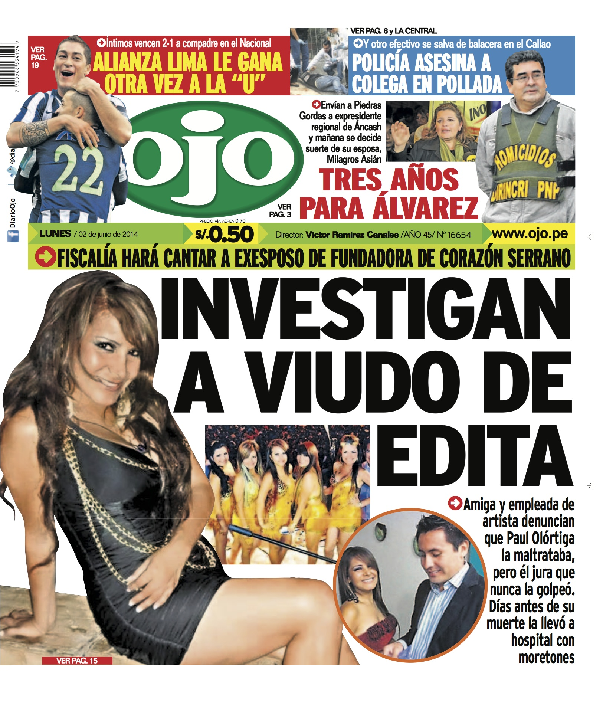

Diario El Comercio

Diario Ojo

Diario Perú21
Diario La República
Retos de la libertad de prensa en Colombia
El 3 de mayo se celebró el Día Mundial de la Libertad de Prensa, y quisimos aprovechar la oportunidad para consultarle a un periodista experimentado cuáles cree que son los retos de la libertad de prensa en Colombia. Esta es la respuesta de Carlos Mario Correa, periodista y docente del pregrado de Comunicación social de la Universidad EAFIT.
Diario El Comercio
Diario Ojo
Diario Perú21
Diario La República
El Ojo
Es un diario de Perú fundado en 1968 por el empresario Luis Banchero Rossi.
El Comercio
Es un diario de Perú con una tirada promedio de 100 000 ejemplares diarios. Se fundó en 1839, lo cual lo convierte en el más importante y antiguo del país.
La República
Es un diario peruano de circulación nacional que se edita en Lima y tiene ediciones regionales en Chiclayo, Iquitos y Arequipa.